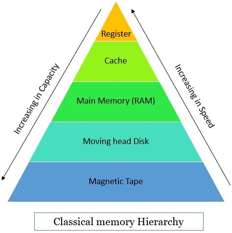

Memory Organization in Computer Architecture
Memory organization refers to the way data is stored, accessed, and managed in a computer system. It is a fundamental aspect of computer architecture, affecting performance, efficiency, and reliability.
Main Types of Memory
- Primary Memory (Main Memory): Fast, directly accessible by the CPU. Includes RAM (Random Access Memory) and cache.
- Secondary Memory: Slower, used for long-term storage. Includes hard drives, SSDs, CDs, DVDs, Blu-ray discs, USB drives, magnetic tapes, etc.
- Cache Memory: Very fast, small-sized memory located close to the CPU to speed up access to frequently used data.
- Registers: Smallest and fastest memory, located inside the CPU, used to hold instructions, addresses, and data currently being processed. Examples include Accumulator, Program Counter, Instruction Register, Stack Pointer, and General Purpose Registers.
- ROM (Read Only Memory): Non-volatile memory that stores firmware or permanent instructions required for booting and basic operations. Types include PROM, EPROM, and EEPROM.
Memory Hierarchy Diagram

- Registers → Cache → Main Memory (RAM/ROM) → Secondary Storage
- Speed decreases and capacity increases as you move down the hierarchy.
Registers
Registers are the fastest memory elements in a computer system, located inside the CPU. They temporarily hold data, instructions, and addresses that are being used immediately by the CPU. Common types of registers include:
- Accumulator (ACC): Used for arithmetic and logic operations.
- Program Counter (PC): Holds the address of the next instruction to be executed.
- Instruction Register (IR): Holds the current instruction being executed.
- Stack Pointer (SP): Points to the top of the stack in memory.
- General Purpose Registers: Used for temporary data storage during program execution.
Primary Memory (RAM and ROM)
RAM (Random Access Memory): Volatile memory, meaning its contents are lost when power is turned off. It is used to store data and instructions that are currently in use.
ROM (Read Only Memory): Non-volatile memory that retains its contents even when power is off. ROM stores firmware and system boot instructions. Types of ROM include:
- PROM (Programmable ROM): Can be programmed once after manufacturing.
- EPROM (Erasable Programmable ROM): Can be erased by exposure to UV light and reprogrammed.
- EEPROM (Electrically Erasable Programmable ROM): Can be erased and reprogrammed electrically.
+-------------------+
| CPU |
+-------------------+
|
+-------------------+
| Registers |
+-------------------+
|
+-------------------+
| Cache Memory |
+-------------------+
|
+-------------------+
| RAM/ROM |
+-------------------+
|
+-------------------+
| Secondary Storage |
+-------------------+
Cache Memory
Cache memory is a small, high-speed memory between the CPU and RAM. It stores frequently accessed data and instructions to reduce access time.
- L1 Cache: Smallest and fastest, located inside the CPU core.
- L2 Cache: Larger than L1, may be inside or outside the CPU core.
- L3 Cache: Shared among CPU cores, larger and slower than L1/L2.
Secondary Memory
Secondary memory is non-volatile and used for permanent data storage. It is slower than primary memory but offers much higher capacity. Types of secondary memory include:
- Hard Disk Drives (HDDs): Magnetic storage devices for large data storage.
- Solid State Drives (SSDs): Faster, flash-based storage devices.
- Optical Disks: CDs, DVDs, Blu-ray discs used for media and data storage.
- USB Flash Drives: Portable, flash-based storage devices.
- Magnetic Tapes: Used for archival and backup storage.
- Memory Cards: Used in cameras, smartphones, and other portable devices.
Example: How Data Flows
- CPU requests data.
- If data is in a register, it is accessed instantly.
- If not, CPU checks cache memory (L1, L2, L3).
- If not in cache, data is fetched from RAM or ROM.
- If not in RAM/ROM, data is loaded from secondary storage into RAM, then to cache, then to CPU.
Summary Table
| Memory Type |
Speed |
Cost |
Volatility |
Capacity |
| Register |
Fastest |
Very High |
Volatile |
Very Low |
| Cache |
Very Fast |
High |
Volatile |
Low |
| RAM |
Fast |
Medium |
Volatile |
Medium |
| ROM |
Fast |
Medium |
Non-Volatile |
Medium |
| Secondary Storage |
Slow |
Low |
Non-Volatile |
High |